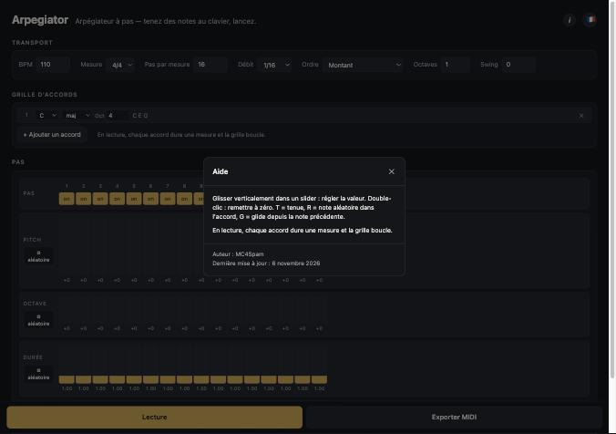

Ventana de ayuda
Diálogo modal abierto desde el botón « i » de la cabecera. Recuerda brevemente cómo usar el grid de pasos y muestra el autor y la fecha de la última publicación.

Contenido
| Título « Ayuda » + botón ✕ | Barra de encabezado del diálogo; ✕ cierra la ventana (Escape o clic en el fondo también). |
|---|---|
| Uso del grid de pasos | Arrastra verticalmente un deslizador para fijar el valor. Doble clic para reiniciar. T = ligadura, R = nota aleatoria del acorde, G = glisando desde la nota anterior. |
| Uso de la reproducción | Durante la reproducción, cada acorde dura un compás y el grid se repite. |
| Pie | Autor: MC4Spam. Última actualización: fecha de la última publicación, localizada en el idioma actual. |